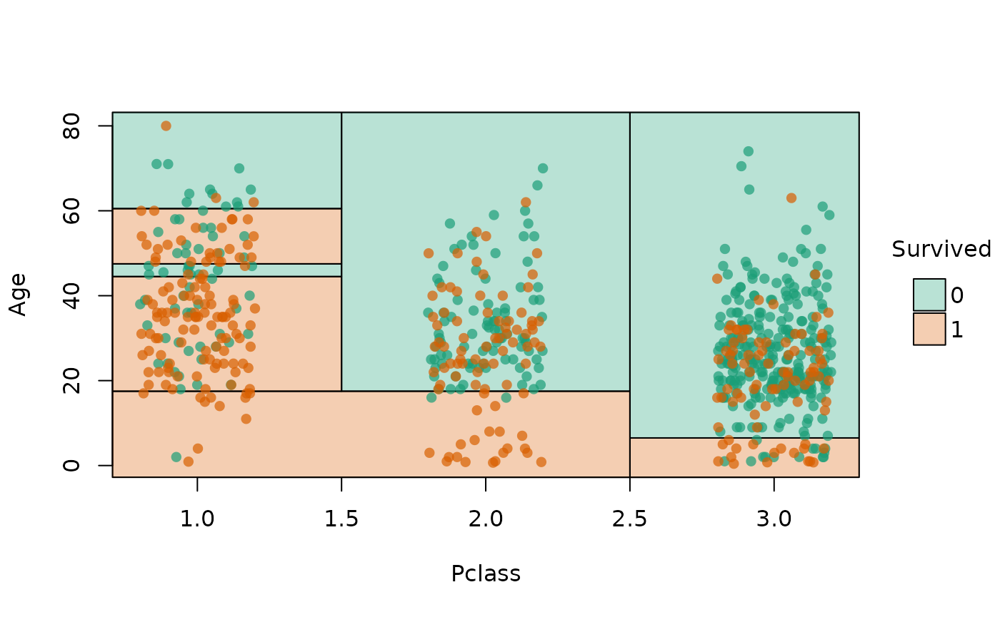

Motivating example: Classifying penguin species
Start by loading the parttree package alongside rpart, which comes bundled with the base R installation. For the basic examples that follow, I’ll use the well-known Palmer Penguins dataset to demonstrate functionality. You can load this dataset via the parent package (as I have here), or import it directly as a CSV here.
library(parttree) # This package
library(rpart) # For fitting decisions trees
# install.packages("palmerpenguins")
data("penguins", package = "palmerpenguins")
head(penguins)
#> # A tibble: 6 × 8
#> species island bill_length_mm bill_depth_mm flipper_length_mm body_mass_g
#> <fct> <fct> <dbl> <dbl> <int> <int>
#> 1 Adelie Torgersen 39.1 18.7 181 3750
#> 2 Adelie Torgersen 39.5 17.4 186 3800
#> 3 Adelie Torgersen 40.3 18 195 3250
#> 4 Adelie Torgersen NA NA NA NA
#> 5 Adelie Torgersen 36.7 19.3 193 3450
#> 6 Adelie Torgersen 39.3 20.6 190 3650
#> # ℹ 2 more variables: sex <fct>, year <int>Dataset in hand, let’s say that we are interested in predicting penguin species as a function of 1) flipper length and 2) bill length. We could model this as a simple decision tree:
tree = rpart(species ~ flipper_length_mm + bill_length_mm, data = penguins)
tree
#> n=342 (2 observations deleted due to missingness)
#>
#> node), split, n, loss, yval, (yprob)
#> * denotes terminal node
#>
#> 1) root 342 191 Adelie (0.441520468 0.198830409 0.359649123)
#> 2) flipper_length_mm< 206.5 213 64 Adelie (0.699530516 0.295774648 0.004694836)
#> 4) bill_length_mm< 43.35 150 5 Adelie (0.966666667 0.033333333 0.000000000) *
#> 5) bill_length_mm>=43.35 63 5 Chinstrap (0.063492063 0.920634921 0.015873016) *
#> 3) flipper_length_mm>=206.5 129 7 Gentoo (0.015503876 0.038759690 0.945736434) *Like most tree-based frameworks, rpart comes with a
default plot method for visualizing the resulting node
splits.
While this is okay, I don’t feel that it provides much intuition about the model’s prediction on the scale of the actual data. In other words, what I’d prefer to see is: How has our tree partitioned the original penguin data?
This is where parttree enters the fray. The package
is named for its primary workhorse function parttree(),
which extracts all of the information needed to produce a nice plot of
our tree partitions alongside the original data.
Et voila! Now we can clearly see how our model has divided up the Cartesian space of the data. Gentoo penguins typically have longer flippers than Chinstrap or Adelie penguins, while the latter have the shortest bills.
From the perspective of the end-user, the ptree parttree
object is not all that interesting in of itself. It is simply a data
frame that contains the basic information needed for our plot (partition
coordinates, etc.). You can think of it as a helpful intermediate object
on our way to the visualization of interest.
# See also `attr(ptree, "parttree")`
ptree
#> node species path xmin
#> 1 3 Gentoo flipper_length_mm >= 206.5 206.5
#> 2 4 Adelie flipper_length_mm < 206.5 --> bill_length_mm < 43.35 -Inf
#> 3 5 Chinstrap flipper_length_mm < 206.5 --> bill_length_mm >= 43.35 -Inf
#> xmax ymin ymax
#> 1 Inf -Inf Inf
#> 2 206.5 -Inf 43.35
#> 3 206.5 43.35 InfSpeaking of visualization, underneath the hood
plot.parttree calls the powerful tinyplot
package. All of the latter’s various customization arguments can be
passed on to our parttree plot to make it look a bit nicer.
For example:
plot(ptree, pch = 16, palette = "classic", alpha = 0.75, grid = TRUE)Supported model classes
Alongside the rpart
model objects that we have been working with thus far,
parttree also supports decision trees created by the partykit
package. Here we see how the latter’s ctree (conditional
inference tree) algorithm yields a slightly more sophisticated
partitioning that the former’s default.
library(partykit)
#> Loading required package: grid
#> Loading required package: libcoin
#> Loading required package: mvtnorm
ctree(species ~ flipper_length_mm + bill_length_mm, data = penguins) |>
parttree() |>
plot(pch = 16, palette = "classic", alpha = 0.5)parttree also supports a variety of “frontend” modes
that call rpart::rpart() as the underlying engine. This
includes packages from both the mlr3 and tidymodels (parsnip or workflows) ecosystems. Here
is a quick demonstration using parsnip, where we’ll
also pull in a different dataset just to change things up a little.
set.seed(123) ## For consistent jitter
library(parsnip)
library(titanic) ## Just for a different data set
titanic_train$Survived = as.factor(titanic_train$Survived)
## Build our tree using parsnip (but with rpart as the model engine)
ti_tree =
decision_tree() |>
set_engine("rpart") |>
set_mode("classification") |>
fit(Survived ~ Pclass + Age, data = titanic_train)
## Now pass to parttree and plot
ti_tree |>
parttree() |>
plot(pch = 16, jitter = TRUE, palette = "dark", alpha = 0.7)
ggplot2
The default plot.parttree method produces a base
graphics plot. But we also support ggplot2 via with a
dedicated geom_parttree() function. Here we demonstrate
with our initial classification tree from earlier.
library(ggplot2)
theme_set(theme_linedraw())
## re-using the tree model object from above...
ggplot(data = penguins, aes(x = flipper_length_mm, y = bill_length_mm)) +
geom_point(aes(col = species)) +
geom_parttree(data = tree, aes(fill=species), alpha = 0.1)Compared to the “native” plot.parttree method, note that
the ggplot2 workflow requires a few tweaks:
- We need to need to plot the original dataset as a separate layer
(i.e.,
geom_point()). -
geom_parttree()accepts the tree object itself, not the result ofparttree().1
Continuous regression trees can also be drawn with
geom_parttree. However, I recommend adjusting the plot fill
aesthetic since your model will likely partition the data into intervals
that don’t match up exactly with the raw data. The easiest way to do
this is by setting your colour and fill aesthetic together as part of
the same scale_colour_* call.
## re-using the tree_cont model object from above...
ggplot(data = penguins, aes(x = flipper_length_mm, y = bill_length_mm)) +
geom_parttree(data = tree_cont, aes(fill=body_mass_g), alpha = 0.3) +
geom_point(aes(col = body_mass_g)) +
scale_colour_viridis_c(aesthetics = c('colour', 'fill')) # NB: Set colour + fill togetherGotcha: (gg)plot orientation
As we have already said, geom_parttree() calls the
companion parttree() function internally, which coerces the
rpart tree object into a data frame that is easily
understood by ggplot2. For example, consider our
initial “ptree” object from earlier.
# ptree = parttree(tree)
ptree
#> node species path xmin
#> 1 3 Gentoo flipper_length_mm >= 206.5 206.5
#> 2 4 Adelie flipper_length_mm < 206.5 --> bill_length_mm < 43.35 -Inf
#> 3 5 Chinstrap flipper_length_mm < 206.5 --> bill_length_mm >= 43.35 -Inf
#> xmax ymin ymax
#> 1 Inf -Inf Inf
#> 2 206.5 -Inf 43.35
#> 3 206.5 43.35 InfAgain, the resulting data frame is designed to be amenable to a
ggplot2 geom layer, with columns like
xmin, xmax, etc. specifying aesthetics that
ggplot2 recognizes. (Fun fact:
geom_parttree() is really just a thin wrapper around
geom_rect().) The goal of parttree is to
abstract away these kinds of details from the user, so that they can
just specify geom_parttree()—with a valid tree object as
the data input—and be done with it. However, while this generally works
well, it can sometimes lead to unexpected behaviour in terms of plot
orientation. That’s because it’s hard to guess ahead of time what the
user will specify as the x and y variables (i.e. axes) in their other
ggplot2 layers.2 To see what I mean, let’s redo our penguin
plot from earlier, but this time switch the axes in the main
ggplot() call.
## First, redo our first plot but this time switch the x and y variables
p3 = ggplot(
data = penguins,
aes(x = bill_length_mm, y = flipper_length_mm) ## Switched!
) +
geom_point(aes(col = species))
## Add on our tree (and some preemptive titling..)
p3 +
geom_parttree(data = tree, aes(fill = species), alpha = 0.1) +
labs(
title = "Oops!",
subtitle = "Looks like a mismatch between our x and y axes..."
)As was the case here, this kind of orientation mismatch is normally
(hopefully) pretty easy to recognize. To fix, we can use the
flip = TRUE argument to flip the orientation of the
geom_parttree layer.
p3 +
geom_parttree(
data = tree, aes(fill = species), alpha = 0.1,
flip = TRUE ## Flip the orientation
) +
labs(title = "That's better")